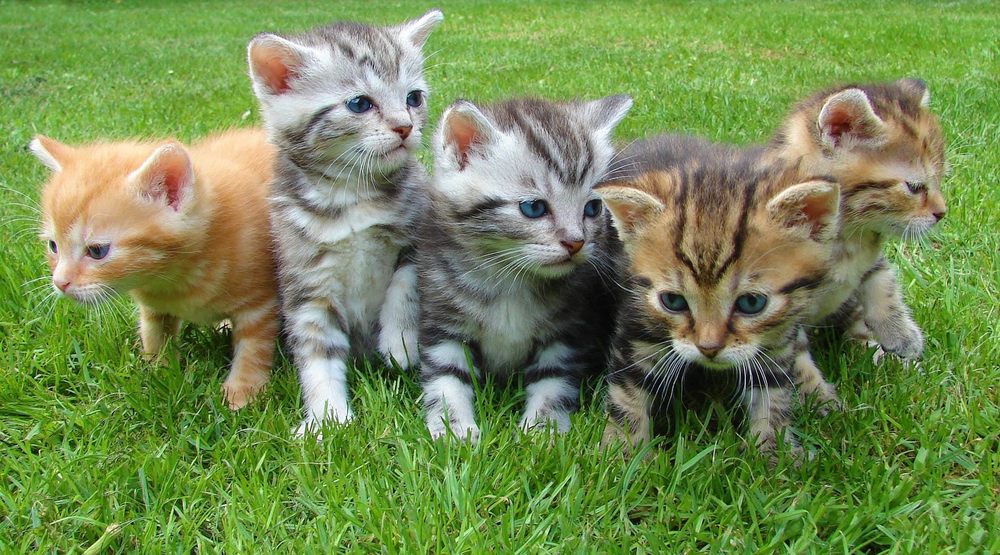
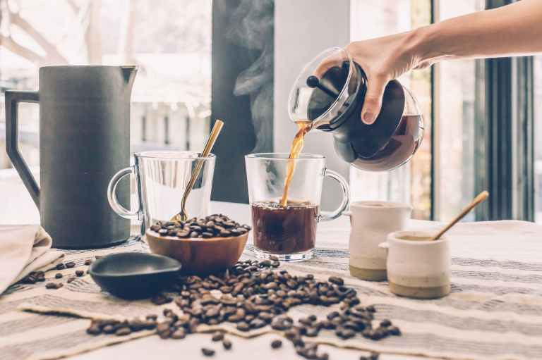
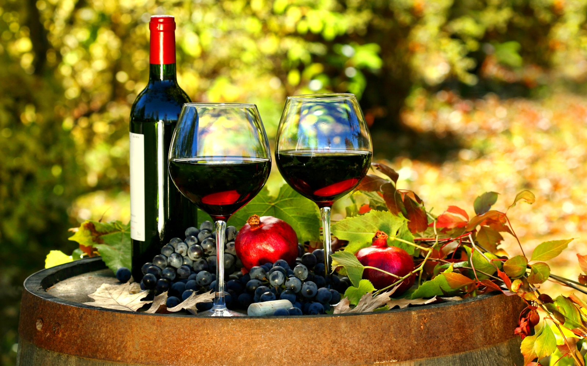
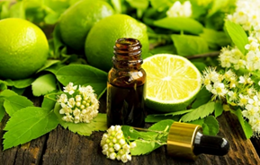
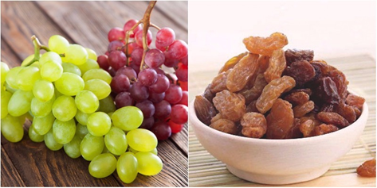
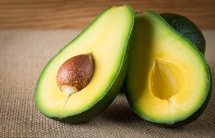
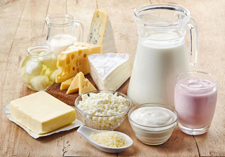
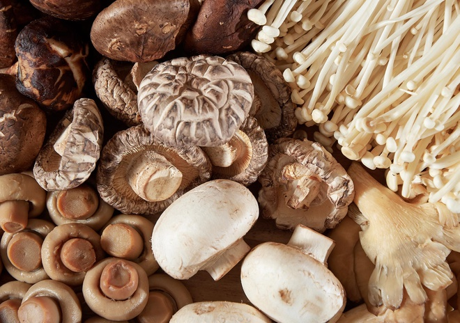
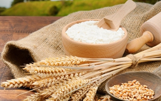
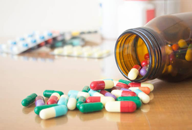

Những loại thức ăn nên tránh khi nuôi mèo!
Có nhiều loại thức ăn không nên cho mèo ăn vì có thể ảnh hưởng đến bộ máy tiêu hóa của mèo. Bạn cùng Mini Pet tìm hiểu thông tin này nhé!
1. Các đồ uống chứa Caffeine
- Caffeine hoạt động như một thuốc lợi tiểu gây mất nước và gây độc ảnh hưởng tới hoạt động của tim mạch và hệ thần kinh của mèo.
- Các triệu chứng ngộ độc caffeine bao gồm: Bồn chồn, thở nhanh, hồi hộp tim và run cơ – > Mèo không uống được cafe đâu bạn nhé!

2. Rượu hoặc các đồ uống có cồn
Bạn tuyệt đối không được cho mèo uống các loại bia hay rượu có cồn vì cồn tác động tới gan, não bộ gây trúng độc, hôn mê và khiến mèo tử vong. Chỉ với 2 muỗng nhỏ rượu Whisky, các bạn gây ngộ độc nghiêm trọng cho một chú mèo trên 2kg, thêm một muỗng nữa sẽ làm mèo chết ngay lập tức.

3. Thức ăn, đồ uống có tinh dầu chanh
Chanh và vitamin C là thứ Nhạy cảm với mèo, gây nôn mửa. Mèo có thể tự tổng hợp vitamin C từ Glucose – không cần bổ sung loại Vitamin này từ ngoài cho mèo.

4. Nho tươi và nho khô
- Nho tươi và nho khô tuy tốt cho con người nhưng gây suy thận cho mèo. Ăn nhiều nho khiến mèo càng có nguy cơ nhiễm độc cao hơn và trầm trọng hơn.
- Dấu hiệu xảy ra trong 24 giờ là tiêu chảy, ăn không ngon, ngủ li bì mệt mỏi, suy nhược, đau bụng và giảm đi tiểu.

5. Quả bơ
Bơ chứa persin – một loại độc tố đối với nhiều động vật bao gồm cả mèo có vấn đề về đường tiêu hóa và đường hô hấp.

6. Sữa, các sản phẩm của sữa, kem
Chúng có thể gây tiêu chảy có thể gây ra mất nước đặc biệt với mèo trưởng thành, vì mèo từ khi cai sữa mẹ đã dần mất đi khả năng tiêu hóa lactose trong sữa. Hậu quả của việc lactose đọng lại trong dạ dày cuối cùng là tiêu chảy, nôn mửa và kiệt sức.

7. Bánh kẹo có nhiều đường
Đồ ăn quá ngọt gây đái tháo đường cho mèo, chất xylitol làm tăng chuyển hóa insulin trong máu gây phân hủy đường huyết, tụt đường huyết, suy gan và hôn mê.
8. Hành, hành tây, tỏi, hẹ, rau thơm
Cho đồ ăn có hành với tỏi không phải là ý tưởng tốt cho mèo. Các sulfoxides và disunphua trong hành phá hủy các tế bào hồng cầu và có thể gây ra Thiếu máu hay viêm loét dạ dày.
Các bạn nên cẩn thận với cả những loại đồ ăn sẵn, được chế biến sẵn để tránh cho mèo ăn phải những gia vị trên.
9. Nấm ăn
Bạn tuyệt đối không được cho mèo uống các loại bia hay rượu có cồn vì cồn tác động tới gan, não bộ gây trúng độc, hôn mê và khiến mèo tử vong. Chỉ với 2 muỗng nhỏ rượu Whisky, các bạn gây ngộ độc nghiêm trọng cho một chú mèo trên 2kg, thêm một muỗng nữa sẽ làm mèo chết ngay lập tức.

10. Bột mì
Bột mì nở ra hút dịch và nước trong dạ dày, ăn ít thì cản trở tiêu hóa, ăn nhiều gây phồng, tổn thương dạ dày và sản sinh cồn, vốn là chất cấm kị với mèo.

11. Thức ăn dành riêng cho chó
Nhu cầu dinh dưỡng của chó và mèo khác biệt nhau hoàn toàn, các loại thức ăn chó không phù hợp cho mèo ăn và tác động xấu tới sức khỏe khi phải sử dụng lâu dài.
12. Trứng, thịt, cá sống
Bất kỳ ai cũng không nên ăn đồ sống bởi trong chúng sống hay có chứa vi khuẩn gây ngộ độc. Đặc biệt là với mèo bởi nguy cơ nhiễm khuẩn salmonella gây ra vấn đề nghiêm trọng. Các bạn luộc chín quả trứng, thịt, cá lên là cho mèo ăn được nhé.

13. Gan động vật
Ở mức độ vừa phải, gan động vật là sản phẩm vô cùng phù hợp, nhưng cho ăn quá nhiều gan thì bắt đầu gây độc hệ cơ, xương vì đưa vào cơ thể mèo hàm lượng vitamin A quá cao không thể sử dụng hay thải bớt.
Các bạn chỉ nên cho mèo ăn gan tối đa 2 bữa mỗi tuần để có kết quả tốt.
14. Thuốc
Và đừng bao giờ cho mèo uống bất kỳ loại thuốc nào không kê đơn trừ khi được bác sĩ thú y khuyên dùng. Các thành phần : Acetaminophen hoặc ibuprofen phổ biến trong thuốc giảm đau và thuốc cảm lạnh có thể gây chết người cho con mèo của bạn.

Trên đây là một số loại thức ăn nên tránh khi nuôi mèo, hãy lưu ý kĩ để bảo vệ tốt sức khỏe cho chú mèo của bạn nhé!